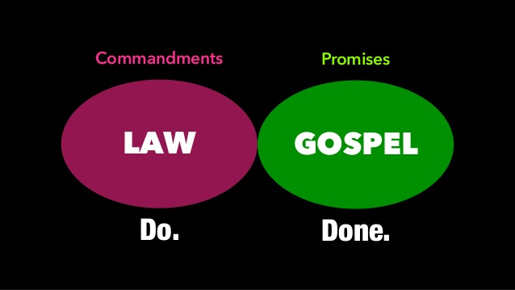

Part 2: Traditional Christian Doctrines Against Obeying God's Law

In this part, we will discuss some of the most common traditional Christrian doctrines that exist against obeying God's Law. The doctrines we will discuss are as follows.
The Law has been done away with (voided/canceled/no longer applies).
The Law was nailed to the Cross.
The Law is a burden.
Following the Law puts believers under bondage.
The Law was fulfilled by Jesus so we don't have to follow it.
We are under grace, not the Law. The New Covenant is a covenant of grace; the Old Covenant is a covenant of law.
Christianity is not about following rules (the Law); it’s about a relationship with God/Jesus.
Only the moral law of the Mosaic Law applies to Christians; the ceremonial and ritual laws have been canceled.
Dual-Covenant Theology: Mosaic Covenant only remains valid for Jews; Gentiles are not under the Law.
The 10 Commandments still apply for Christians, but only those that are repeated as commands in the New Testament. Since the Sabbath command is not repeated, the Sabbath law (4th law) does not apply.